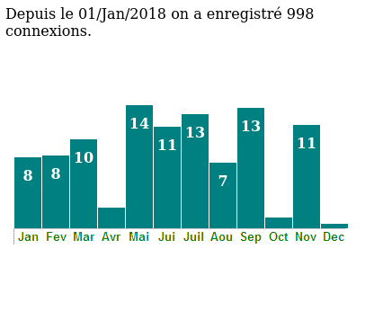
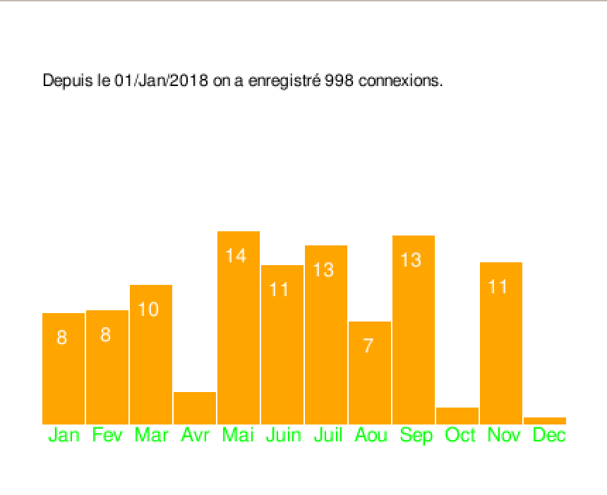

This section gives you the listing of a program in C language which,
once compiled and installed, generates the displays corresponding to the analysis of the
access_statique.log file that can be viewed on the logs page.
This is a static version (the execution of the program always generates the same result whatever the content of the log file).
/* * versionstatique.c * * © Copyright 2024 E. Huot <etienne.huot@uvsq.fr> * * This program is can only be used for education purpose. * It is part of a project, so-called SAÉ, aiming to learn * programmation bases using the C language. * It can only be used by the students of the RT departement, * Technological Institute of Velizy - Université de Versailles - Saint- * Quentin-en-Yvelines - Université de Paris-Saclay. * * The aim of the project is to propose a tool to vizualize a bunch of * statistics on a web server logs. * The following code propose a static version of the code that have to * be developped by the students. * */ #include <stdio.h> #include <stdlib.h> #include <string.h> #include <libgraphique.h> void lecture_style() { /* We could have used a CSS file, but it is sometimes */ /* more practical to define the style within the HTML */ /* code generated by this CGI-BIN. */ /* We read this style from the file "aecrire.html" */ /* and then display it. */ /* */ /* An attentive student will easily notice that this */ /* function may not be useless for their own needs... */ FILE *fd; char str[1024]; if ((fd = fopen("aecrire.html","r")) == NULL) fprintf(stderr,"ERREUR DE CHARGEMENT DE FICHIER\n"); else { while (!feof(fd)){ fgets(str,1024,fd); printf("%s",str); } fclose(fd); } } void versionweb() { printf("Content-type: text/html\n\n"); printf("<!doctype html>\n"); printf("<html lang=\"fr\">\n"); printf("<body>\n"); lecture_style(); /* * Note that for the web, accented characters have been * transformed because C character strings are natively * encoded in ASCII and not in UTF-8. * A student eager to do things properly should normally * preprocess all accents before displaying them in HTML. */ printf("Depuis le 01/Jan/2018 on a enregistré 998 connexions.<br>\n"); printf("<div id = \"vertgraph\">\n"); printf(" <ul>\n"); /* * Each bar of the histogram is placed every 31 pixels. * The label here corresponds to the height/10. * Labels for heights < 25, are not displayed as it would not fit into the bar */ printf(" <li style=\"left: 10px; height: 79px;\">8</li>\n"); printf(" <li style=\"left: 41px; height: 81px;\">8</li>\n"); printf(" <li style=\"left: 72px; height: 99px;\">10</li>\n"); printf(" <li style=\"left: 103px; height: 23px;\"></li>\n"); printf(" <li style=\"left: 134px; height: 137px;\">14</li>\n"); printf(" <li style=\"left: 165px; height: 113px;\">11</li>\n"); printf(" <li style=\"left: 196px; height: 127px;\">13</li>\n"); printf(" <li style=\"left: 227px; height: 73px;\">7</li> \n"); printf(" <li style=\"left: 258px; height: 134px;\">13</li> \n"); printf(" <li style=\"left: 289px; height: 12px;\"></li> \n"); printf(" <li style=\"left: 320px; height: 115px;\">11</li>\n"); printf(" <li style=\"left: 351px; height: 5px;\"></li> \n"); printf(" </ul>\n"); printf("</div>\n"); printf("</html>\n"); printf("</body>\n\n"); } void versiontexte() { /* * We avoid accented letters in the shell */ printf("Depuis le 01/Jan/2018 on a enregistre 998 connexions.\n"); printf(" Janvier : 7.9%%\n"); printf(" Fevrier : 8.1%%\n"); printf(" Mars : 9.9%%\n"); printf(" Avril : 2.3%%\n"); printf(" Mai : 13.7%%\n"); printf(" Juin : 11.3%%\n"); printf(" Juillet : 12.7%%\n"); printf(" Aout : 7.3%%\n"); printf(" Septembre : 13.4%%\n"); printf(" Octobre : 1.2%%\n"); printf(" Novembre : 11.5%%\n"); printf(" Decembre : 0.5%%\n"); } void versiongraphique() { Point p = {30,50}; ouvrir_fenetre(430,350); dessiner_rectangle((Point){0,0},430,350,blanc); afficher_texte("Depuis le 01/Jan/2018 on a enregistré 998 connexions.",12,p,noir); p.y=300; afficher_texte(" Jan Fev Mar Avr Mai Juin Juil Aou Sep Oct Nov Dec",14,p,vert); dessiner_rectangle((Point){30,221},30,79,bleu); dessiner_rectangle((Point){61,219},30,81,bleu); dessiner_rectangle((Point){92,201},30,99,bleu); dessiner_rectangle((Point){123,277},30,23,bleu); dessiner_rectangle((Point){154,163},30,137,bleu); dessiner_rectangle((Point){185,187},30,113,bleu); dessiner_rectangle((Point){216,173},30,127,bleu); dessiner_rectangle((Point){247,227},30,73,bleu); dessiner_rectangle((Point){278,166},30,134,bleu); dessiner_rectangle((Point){309,288},30,12,bleu); dessiner_rectangle((Point){340,185},30,115,bleu); dessiner_rectangle((Point){371,295},30,5,bleu); afficher_texte("8",14,(Point){40,231},blanc); afficher_texte("8",14,(Point){71,229},blanc); afficher_texte("10",14,(Point){97,211},blanc); afficher_texte("14",14,(Point){159,173},blanc); afficher_texte("11",14,(Point){190,197},blanc); afficher_texte("13",14,(Point){221,183},blanc); afficher_texte("7",14,(Point){257,237},blanc); afficher_texte("13",14,(Point){283,176},blanc); afficher_texte("11",14,(Point){345,195},blanc); actualiser(); attendre_clic(); fermer_fenetre(); } int main(int argc, char* argv[]) { if (argc > 1) { if (strcmp(argv[1],"-txt")==0) { versiontexte(); } if (strcmp(argv[1],"-gr")==0) { versiongraphique(); } } else { versionweb(); } return EXIT_SUCCESS; }
Once compiled, the code listed in the previous paragraph,
the program must be placed in /usr/lib/cgi-bin/.
The figure below shows the execution of the program
/usr/lib/cgi-bin/versionstatique
It is used here with its default interface (web).

When executed with the -gr option as in the following command line:
etudiant@virtualdebian:~$ /usr/lib/cgi-bin/versionstatique -gr
libgraphique) that you will use in further TP. Note that this version of the library has been slightly modified to use a font installed in a system directory of this Linux distribution and not the font verdana.ttf installed in a local directory.

When executed with the -txt option as in the following command line:
etudiant@virtualdebian:~$ /usr/lib/cgi-bin/versionstatique -txt
one obtains the following result:
Depuis le 01/Jan/2018 on a enregistre 998 connexions.
Janvier : 7.9%
Fevrier : 8.1%
Mars : 9.9%
Avril : 2.3%
Mai : 13.7%
Juin : 11.3%
Juillet : 12.7%
Aout : 7.3%
Septembre : 13.4%
Octobre : 1.2%
Novembre : 11.5%
Decembre : 0.5%